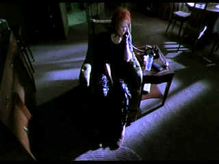

| Requiem for a Dream (SE) /A,B+ |
| Artisan/2000/102/ANA 1.85 |
Darren Aronofsky is a hypnotist; a cinema hypnotist. A visual seducer;
a hip-hop rhythm movie maker. Requiem for a Dream, Aronofsky's second feature, expands on the
stylistic bravura of debut feature Pi. By the time you realize this is not just another cleverly
cut montage of emptiness, Requiem for a Dream has invested itself with such power, it's like a
drug, a film strip drug coursing through your imagination.
The film
is seductive in a horrifying way. Is there a sympathetic character within a hundred miles of film?
I don't really think so. Almost every character is distorted, depressed, disillusioned or depraved.
I have little tolerance for the drug scene. Requiem does not make it seem attractive, that's for
certain. The characters at their very highest are totally out of it. The descent into a black pit of
nothingness offers no hope or redemption. The film is never less than mesmerizing.
A powerful, if depressing, experience.
 |
| Sarah's desperation is captured by actress and camera. ©Artisan |
The acting and the filmmaking blend with frustrating ease. Separating
performance from direction is a difficult chore. Ellen Burstyn is thoroughly compelling as
Sarah Goldfarb. It's the unafraid performance by a seasoned pro, but the garish camera angles and
fantasy make-up is an essential part of the portrait of the old lady descending into hell brought
on by loneliness and hope. Jared Leto turns in another excellent performance as
dazed and diffused Harry Goldfarb. Leto's desperation perspires right through
the camera. Jennifer Connelly cuts to the quick as Harry's girlfriend Marion
and Marlon Wayans is equally adept as Harry's drug compatriot Tyrone.
Aronofsky uses repetition to both echo and amplify the power of
addiction. Not only does this visual stylization add to the film's narrative, it is visually
devastating. Complimented by powerful and aggressive sound editing, these segments help link the
sections of the film connecting the chain of events from end to end.
What a brilliant choice to have the strings of the Kronos Quartet delivering the score for Requiem for a
Dream. The stridently harmonious disquieting music propels the
illusion, mixes the stupor with an added sense of isolation. The camera and
lighting work of cinematographer Matthew Libatique is fluid and nightmarish.
It's hard to decide where the stylized photography
with its enhanced grain and the transfer separate ways. Some scenes are a tad
soft, but overall Requiem for a Dream is delivered in a first rate
transfer. There's no apparent edge enhancement. Contrast range, quite subtle
at times, looks accurate. The colors are dreamy and washed out as per the
cinematographers prescription or fully saturated depending upon the mood. The
Dolby Digital 5:1 surround mix adds to the nightmare mood with crashing style.
Requiem for a Dream, included the extras, which was a project.. The extras are
quite interesting. There's a twenty minute interview of author Hubert Selby Jr. conducted by
Ellen Burstyn. Strange character, that Selby. The making of is atypical in that it is simply video
shot while making the production with voiceover commentary from director Aronofsky. That runs about
a half hour. A bunch of deleted scenes as well. The menus may be clever and salient to the material, but they are ever so maddening. Me? I like
to cut to the quick and start the bloody feature. Requiem for a Dream js
a powerful experience.

The Feature
Archive has articles ranging from Akira
Kurosawa to Blonde
Bimbos.
Movie Rage: Death in the
Aisles
Everyone knows what it feels like
to get angry at the movies these days. Here's a humorous but not so delightful
view of big screen misery.

October Sky/A,A

Johnston’s glorious montage work accompanied by Marc Isham's stunning
Americana score are reason enough for watching this exquisite movie.

|


ISF Monitor
Calibrations in the Tristate New York area. Lots of hardware info and
frequent hardware peaks from video expert Kevin Miller.They may be judgmental,
but that's the point, isn't it. Lots of DVD reviews plus news and more.
 Jim
Doolittle
Jim
Doolittle
ISF Instructor. Premier calibrator and expert front projection system setup
technician in the Boston area.